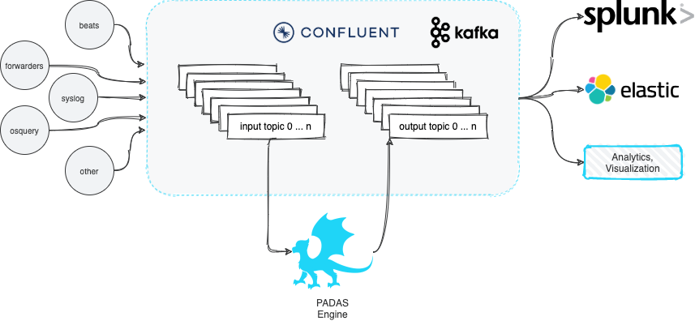

Overview
PADAS Overview
PADAS is built on top of robust Confluent Kafka Platform and enables organizations to transform, analyze, and filter TBs of streaming data in real-time. The goal is to keep things simple and take some of the burden away from existing SIEM and Analytics platforms by running various pipelines (combination of tasks that perform transformations and detections). PADAS comes with out-of-the-box integration examples (e.g. Winlogbeat, Splunk) and ready-to-implement rules pertinent to MITRE ATT&CK Framework. Any other custom rules can also be added (via PDL) without any dependency to existing SIEM or Analytics infrastructure.

-
Set up in 5 minutes
Review PADAS design and architectural considerations and quickly get started on your preferred platform.
-
It's just Markdown
Focus on your content and generate a responsive and searchable static site
-
Made to measure
Change the colors, fonts, language, icons, logo and more with a few lines
-
Open Source, MIT
Material for MkDocs is licensed under MIT and available on [GitHub]
Getting Started
Review PADAS design and architectural considerations and quickly get started on your preferred platform.
Installation
Details on system requirements and how to install and run PADAS in production environments.
Using PADAS
This guide provides how to utilize PADAS Manager for configuring properties and PDL rules.
Integrations
Integrate with data ingest pipelines (e.g. Winlogbeat) and downstream SIEM/Analytics platforms (e.g. Splunk)